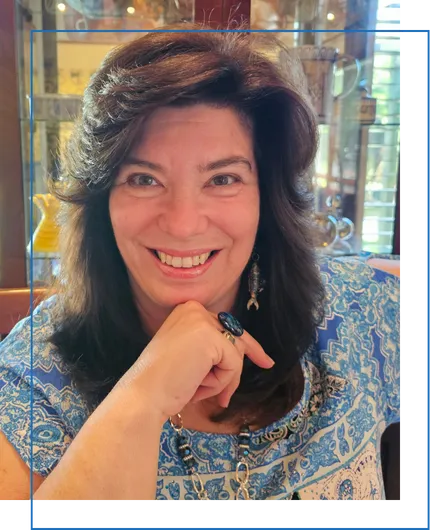
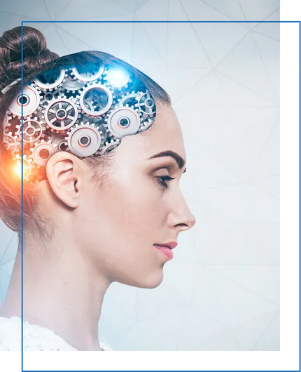
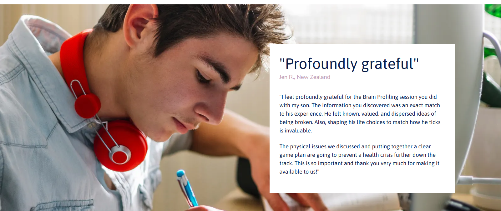
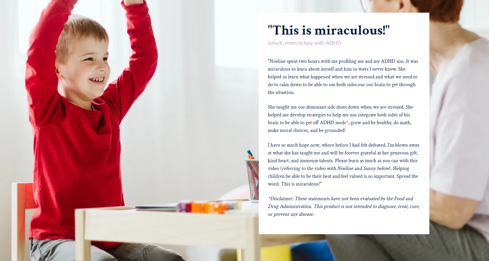

Connecting Hearts & Minds For Performance with Genetic Brain Profiling
Uncover hidden truths about what happens in the brain and why behavior patterns shift when the body is subjected to stress. Through non-invasive Genetic Brain Dominance Profiling (GBDP), we help bring clarity to children, families, students, professionals, businesses and relationships.
Book A Profile SessionDownload Your Free Needs Assessment
How do you know if you should get a Brain Profile?
Find OutMeet Noeline
Profilogist
Since 2004, Noeline has been providing Genetic Brain Dominance Profiling for students, families, couples and businesses. As a child, she struggled with dyslexia and found little support in the education system. Once she understood her own brain profile, Noeline developed a compassion for herself that could only come from truly understanding how her brain worked.
She explains, “Once I had my profile done I really understood why I had battled all those years. I understood it was more about how I processed information and had no reflection on my intelligence. I began to respect what I could and could not manage and then could pay closer attention to improving those areas which I found difficult. The overriding experience was one of acceptance and respect for myself.”
It has been a great pleasure for Noeline to profile many people, from all walks of life, witnessing their countless ‘light bulb’ moments and helping them along their own road towards greater understanding, joy and fulfillment.


What is Brain Profiling?
Unlocking the power of human potential
Through Applied Kinesiology (muscle checking), Noeline is able to identify which side of the brain is dominant, as well as which eye, ear, and leg holds dominance in the body. When in stress, the non-dominant side of the brain shuts down, taking with it any dominant parts governed by that side of the body. Brain Profiling explains what is happening in the body when a person is subjected to stress.
This profound experience of understanding how you and those you love are wired provides insight like no other framework can.
Book NowWhich best describes the help you're seeking?
Children
Understand why your child is getting stuck, enhance your empathy and compassion for your child, and build your toolkit to support his/her unique needs.
Learn MoreStudents
Gain insights into what career could bring the greatest amount of success and satisfaction to your child.
Learn MoreProfessionals
Gain insight into why you behave with specific patterns, what makes you tick and how you can better lead yourself at work.
Learn MoreFor Teams
Genetic Brain Dominance Profiling provides a powerful tool to enhance communication and teamwork within any organization.
Learn MoreFor Recruitment
Brain Profiling can help an organization choose the candidate who is best suited for any given role.
Learn MoreFor Relationships
Brain Profiling provides insight into how to manage differences and potential conflicts.
Learn More
Here's what you can expect at your session
Brain Profiling is a non-invasive, fast, and profound experience. Sessions are held on Zoom and take between 60 to 90 minutes. Within the first 5–10 minutes, Noeline is determining your Brain Profile using Applied Kinesiology techniques. The participant doesn't need to say or do anything in order for Noeline to do the Profile. The rest of the appointment is spent explaining your Profile and discussing implications and strategies to help you be your best.
Book Your Profile Session
Dive deeper into Brain Profiling
Find out what Genetic Brain Dominance Profiling is and how it can help you. In this interview with Sunny Gault from United Network TV, you'll experience the real-life application of Brain Profiling as Sunny shares how the results helped her and her family through tough times.
Book Your Session NowDon't Forget To Get The Needs Assessment
Discover if a Brain Profile would benefit you or someone you love.
Get the Assessment